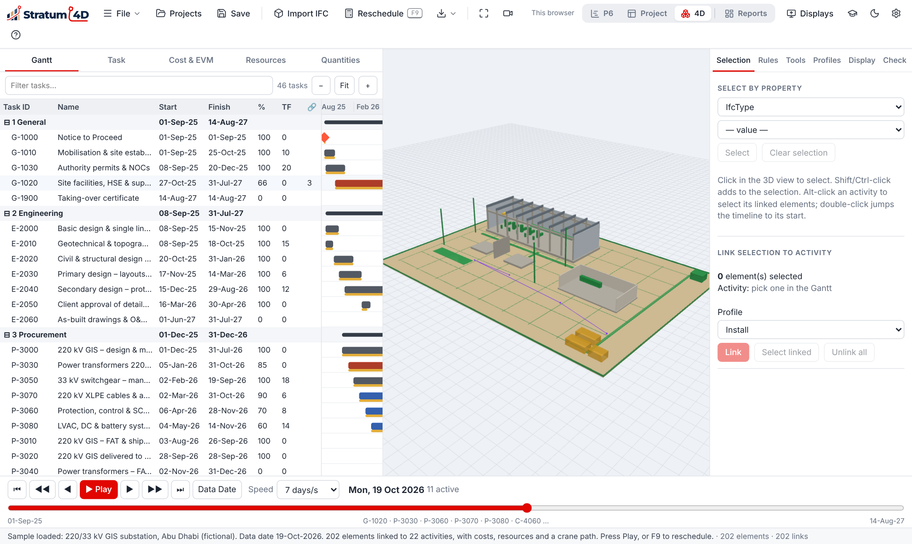
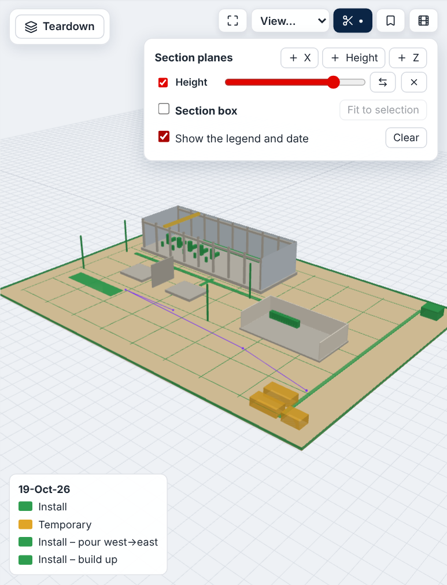
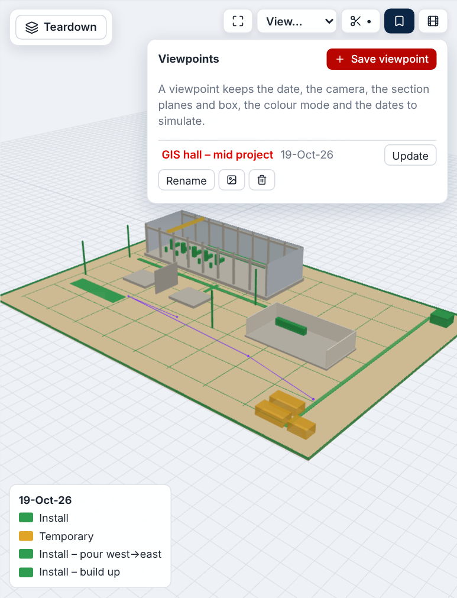
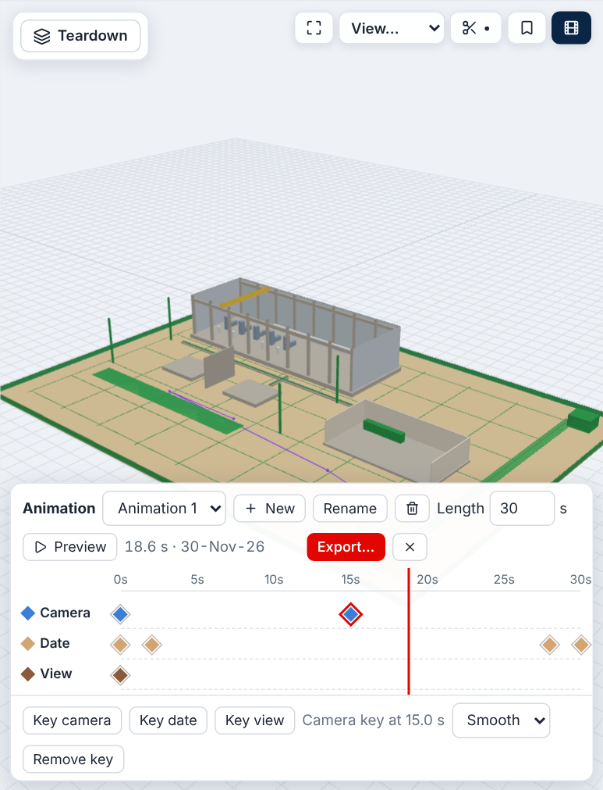
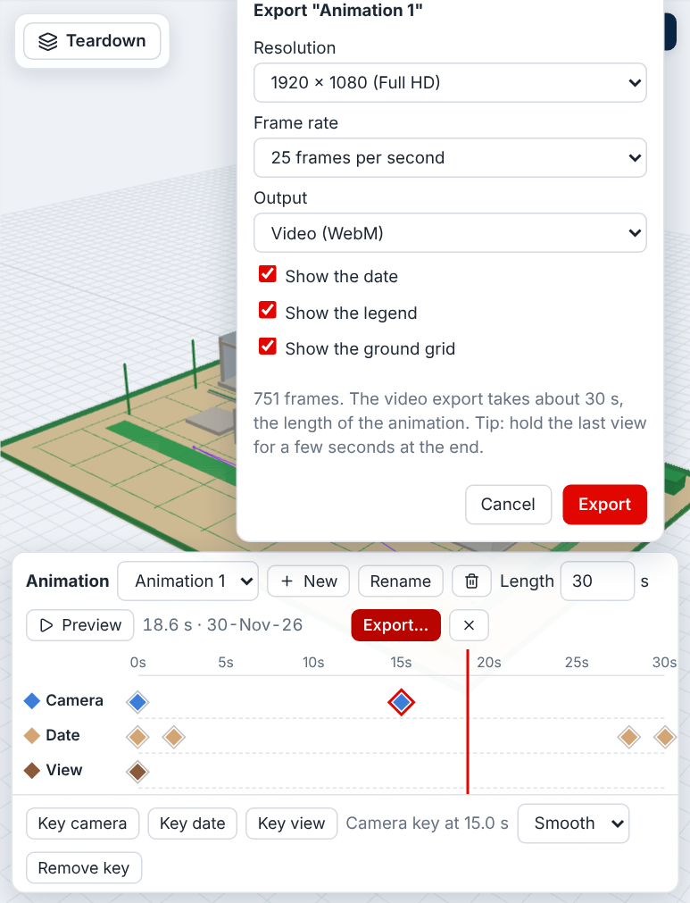
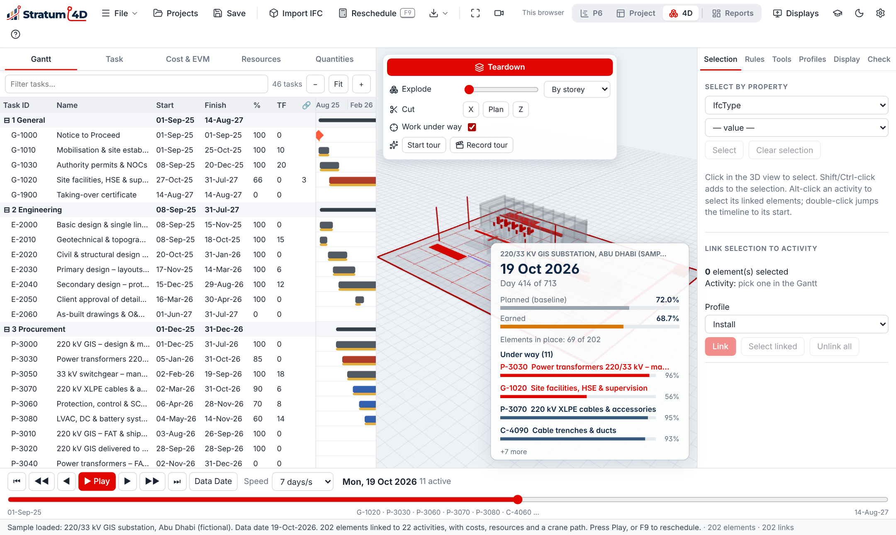
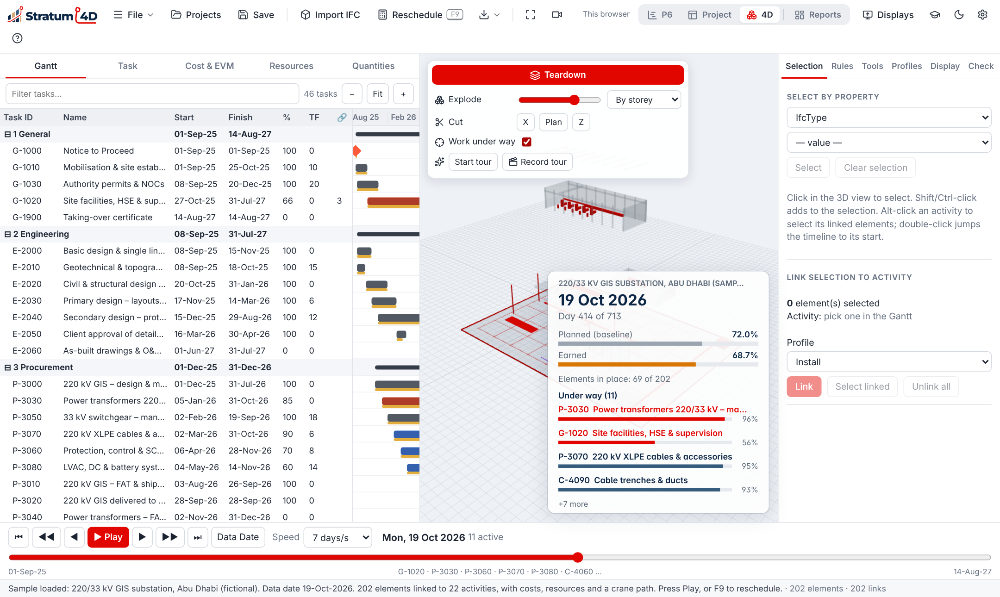

7The 4D layout
This chapter tells you how to link a 3D model to a schedule, and how to play, check and show the 4D simulation.
What a 4D simulation is
A 4D simulation shows the 3D model on the dates of the schedule. Each element of the model shows when its activity starts, and becomes complete when its activity finishes. You can see the sequence of the work before the work starts on site.
Figure 7-1 shows the five steps to make a 4D simulation.
Parts of the 4D layout
| Part | Where | Use |
|---|---|---|
| 3D view | Center | The model on the playback date |
| Side panel | Right | Selection, Rules, Tools, Profiles, Display and Check tabs |
| Gantt chart | Bottom | The activities, with a line on the playback date |
| Playback bar | Below the 3D view | Play, pause, speed, and the buttons to go back or forward |

Load the schedule and the model
- Import the schedule (XER or XML). Chapter 4 gives the procedure.
- Click Import model on the toolbar, or Import 3D model… in the side panel.
- Select the model file and click Open.The model shows in the 3D view. Large models can take some minutes.
| Format | What Stratum 4D reads |
|---|---|
IFC (.ifc, IFC2x3 and IFC4) | Each building element, with its properties, quantities and storey |
glTF (.glb, .gltf) | Each mesh, with its name, its parent node and its custom properties ("extras") |
| OBJ, STL, FBX | Each mesh, with its name. FBX also gives its custom properties. |
If the custom properties of a mesh have an identifier (for example GlobalId), Stratum 4D uses it. Then the links stay when you export the model again. A .gltf file must hold its data in the file. If it does not, export a .glb file.
Link the model to the schedule
Each link connects one element of the model to one activity. There are two methods: rules and manual links.
To link with rules
A rule compares a property of the element with a field of the activity. For example, the rule can link each element where the property Zone is the same as the activity code Zone.
- In the side panel, click the Rules tab.
- Click Auto-detect. Stratum 4D finds the properties that agree with the activity data and proposes rules.
- Examine the proposed rules. To make a different rule, click New rule.
- Click Run all rules.Stratum 4D makes the links and shows the number of linked elements.
To link the selected elements to an activity
- In the side panel, click the Selection tab.
- Select the elements in the 3D view, or use Select by property.
- Select the activity in the Gantt chart.
- Under Link selection to activity, click Link.
To link with the keyboard
- Select the elements in the 3D view.
- Select the activity in the Gantt chart.
- Push Ctrl+Shift+A.Stratum 4D links the elements to the activity. It uses the profile that you selected last on the Selection tab.
Split an element into parts
A model element can be larger than one unit of work. For example, one slab can have three pours, and one wall can have bays and lifts. You can split the element in Stratum 4D. You do not have to change the model. Each part then links to its own activity.
- Select the element in the 3D view.
- In the side panel, click the Tools tab.
- Under Split into pours / bays, select the Split type:
- Equal parts along one axis: select the axis and type the number of parts.
- At positions along one axis (uneven): select the axis and type the cut positions in percent, for example
30, 60. - Grid: columns × rows × layers: type the number of columns (X), rows (Z) and layers (height).
- Type a name for the parts, for example
Pour. - Click Split selection.The parts replace the element. The links of the element go to each part.
To put the element back as one part, select a part and click Unsplit. A growth profile, for example Bottom up, grows each part in its own space.
Appearance profiles
An appearance profile tells how an element looks before, during and after its activity. Stratum 4D has these standard profiles:
| Profile | Before the activity | During the activity | After the activity |
|---|---|---|---|
| Install | Not visible | Shows in the color of the work, and grows | Shows in its own color |
| Remove | Shows in its own color | Shows in the color of the work | Not visible |
| Temporary | Not visible | Visible, for example scaffolding | Not visible |
To change a profile, or to make a new profile, click the Profiles tab. Under Appearance profiles, you can set the colour, the transparency and the growth direction for each phase. For example, set the growth to Bottom up for a wall, or West → east for a slab.
Play the simulation
- In the playback bar, click the play button, or push Space.The playback date moves forward. The model, the Gantt chart and the date change together.
- To change the speed, use Speed.
- To go to one date, drag the line in the Gantt chart, or use the back and forward buttons.
On the Display tab, under Dates to simulate, select Current schedule (actuals + forecast) or Baseline (P6 target dates). Play the two to compare the plan with the forecast. Under Colour by, select one of these modes:
| Mode | Colors |
|---|---|
| Appearance profile | The colors of the profiles |
| Activity status vs baseline | Not started, in progress, critical, late and complete |
| Planned vs actual (ahead / behind) | Green if the work is ahead of the baseline, blue if it is on plan, red if it is behind. An element that the baseline has built, but the current schedule has not, shows in red. |
Check the links
Do a check of the links before you show the simulation to other persons.
- On the Display tab, Unlinked elements shows the elements that have no activity.
- On the Check tab, you see the activities that have no elements, and Broken links. A broken link is a link to an activity or an element that is not in the project now.
To remove all the links and start again, click Clear all links on the Check tab.
Look at the model
The toolbar at the top right of the 3D view has these buttons:
| Button | Use |
|---|---|
| Zoom All | Show the full model from the current direction |
| View… | Look from a standard direction: isometric, top, front, back, left or right |
| Sections | Cut the model with section planes or a section box |
| Viewpoints | Save and show viewpoints |
| Animation | Open the animation editor |
If the 3D view is narrow, the buttons show only their icons. Put the pointer on a button to see its name.
Section planes and the section box
A section plane cuts the model and removes one side. Use it to see inside a building, or under the ground. The section box keeps only the part of the model that is inside the box.
To add a section plane
- Click Sections.
- Click + X, + Height or + Z.A plane cuts the model across that direction.
- Move the slider to set the position of the plane.
- To keep the other side, click ⇄.
You can add more than one plane. To stop a plane for a short time, clear its check box. To remove it, click ×.

To use the section box
- Click Sections.
- Select Section box.Two sliders show for each direction, for the two sides of the box. A red line shows the box.
- To put the box around the selected elements, click Fit to selection.
- Move the sliders to change the box.
Select Show the legend and date to show the colors of the current mode and the playback date over the 3D view. To remove all planes and the box, click Clear.
Viewpoints
A viewpoint keeps the playback date, the camera, the section planes and box, the color mode and the dates to simulate. Use viewpoints to go back to the same picture after a schedule update, or to show important areas in a review with other persons.
To save a viewpoint
- Set the date, the camera and the sections.
- Click Viewpoints.
- Click Save viewpoint.
- Type a name and click OK.

| To | Do this |
|---|---|
| Show a viewpoint | Click its name. The camera moves to the viewpoint. |
| Replace a viewpoint with the current view | Click Update. |
| Change the name | Click Rename. |
| Save a picture | Click the image button. Stratum 4D saves a 1920 × 1080 PNG file with the name, the date and the legend. |
| Remove a viewpoint | Click the delete button. |
Stratum 4D saves the viewpoints with the project.
Animations
An animation is a video of the 4D model that you make yourself. It has three channels of keys:
- Camera: where the camera is, and what it looks at.
- Date: the playback date at that time of the video.
- View: the section planes, the section box, the color mode and the legend.
Between two camera keys, the camera moves smoothly. Between two date keys, the date moves at a constant speed. A view key stays until the next view key.

To make an animation
- Set the camera for the start of the video.
- Click Animation, then New.The new animation shows the full schedule in 30 seconds. It has one camera key and four date keys.
- To change the length, type the number of seconds in Length. The keys move with the length.
- Click the time scale to move the red line to a time of the video.
- Move the camera. Then click the Camera channel at the same time, or click Key camera.A blue key shows on the channel.
- Do steps 4 and 5 again for each camera position.
- To see the result, click Preview.
To change a key
- To move a key to a different time, drag it.
- To remove a key, click it and click Remove key, or push Del.
- For a camera key, select how the camera moves to the next key: Smooth, Linear or Jump.
- To add a date key, set the playback date with the Gantt chart or the playback bar. Then click the Date channel.
- To add a view key, set the sections and the color mode. Then click the View channel.
To export an animation
- Click Export….
- Select the Resolution and the Frame rate.
- At Output, select Video (WebM), or Series of images (PNG, in a zip file).
- Select the options for the date, the legend and the ground grid.
- Click Export.A bar shows the progress. When the export is complete, Stratum 4D saves the file.

Stratum 4D saves the animations with the project.
Teardown
Teardown helps you explain the model to other persons. It moves the parts of the model apart, cuts the model, and shows the work under way. The playback date controls all of these at the same time.

To explode the model
- Click the Teardown button in the 3D view.The Teardown panel opens.
- Under Explode, select By storey or From centre.
- Move the slider to the right.The parts of the model move apart.

To cut the model
- Under Cut, select the axis: X, Plan or Z.
- Move the slider to set the position of the cut.
- To show the other side, click ⇄.
To show the work under way
Select Work under way. The elements of the activities in progress keep their colors. All other elements become gray. Activities that are longer than 40% of the project do not get this accent, because they would cover the full model.
To run a tour
- Click Start tour.The camera moves from one part of the work to the next, and the playback date moves forward.
- To take control, move the mouse or push a key. The tour stops.The tour starts again after 25 seconds with no input.
- To stop the tour, click Stop tour.
To record a video
- Click Record tour.Stratum 4D records the 3D view and the live panel.
- Click Stop.Stratum 4D saves the video file.
To record the playback without the tour, click the record button on the toolbar.